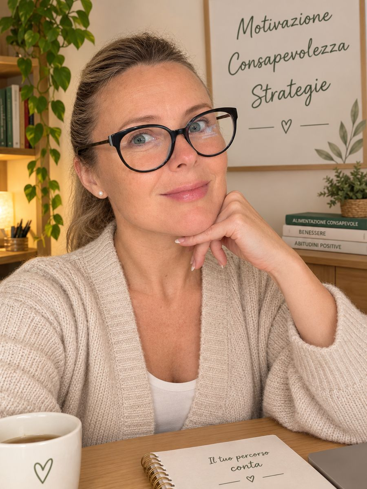

Mangi anche quando non hai fame
Dopo una giornata stressante, quando sei annoiato o stai attraversando un momento difficile, il cibo diventa una risposta a ciò che provi.
Hai deciso di mangiare meglio. Magari ci hai provato tante volte, con impegno e buone intenzioni. Poi arrivano lo stress, la stanchezza, gli imprevisti: ti ritrovi a mangiare come prima e pensi di dover ricominciare da capo.
E se il problema non fosse soltanto sapere cosa fare, ma capire perché fai fatica a farlo?
Sono una Coach Nutrizionale e ti accompagno a comprendere e modificare i comportamenti alimentari che vorresti cambiare, per costruire abitudini più consapevoli e sostenibili. Non con regole sempre più rigide, ma lavorando su motivazione, consapevolezza e strategie concrete.
Il cambiamento non comincia dall'ennesima regola. Comincia dal capire che cosa ti impedisce di cambiare.
Lavoro come coach nutrizionale con un approccio comportamentale orientato alla consapevolezza e alle strategie praticabili nella quotidianità — non alla prescrizione di diete cliniche. Il percorso è pensato per chi sente di “sapere già cosa fare” ma fatica a tradurlo in abitudini stabili.
Prima conversazione gratuita
Forse ti riconosci in una di queste situazioni.
Dopo una giornata stressante, quando sei annoiato o stai attraversando un momento difficile, il cibo diventa una risposta a ciò che provi.
Parti motivato e ti prometti che questa volta sarà diverso. Poi la quotidianità prende il sopravvento.
Quando non rispetti una regola che ti eri imposto, arrivano frustrazione e sensi di colpa.
Nelle situazioni di sempre finisci per ripetere quasi automaticamente comportamenti che vorresti lasciarti alle spalle.
Dopo una ricaduta pensi di dover ripartire da zero, senza capire cosa ti ha riportato alle vecchie abitudini.
Stanchezza, poco tempo, imprevisti: non basta conoscere la scelta giusta, serve capire come affrontare le situazioni critiche.
Se ti riconosci, non significa necessariamente che ti manchi la volontà. Potrebbero esserci abitudini, emozioni e ostacoli da imparare a gestire in modo diverso.
Valuta lo stato nutrizionale e può prescrivere piani alimentari personalizzati. È la figura di riferimento per l'aspetto clinico-nutrizionale.
Lavora sul cambiamento dei comportamenti e sugli ostacoli che rendono difficile mettere in pratica le intenzioni. Non sostituisce il professionista sanitario.
Spesso i due percorsi si completano: uno sul piano alimentare, l'altro sulle abitudini e sulla messa in pratica nella vita reale.
Motivazione · Consapevolezza · Strategie — un approccio al cambiamento del comportamento alimentare.
Comprendere perché vuoi cambiare
Chiarire le ragioni personali del cambiamento, oltre l'entusiasmo iniziale.
Riconoscere cosa influenza le abitudini
Osservare schemi, emozioni, contesti e automatismi quando mangi.
Azioni concrete da sperimentare
Alternative pratiche e realistiche per la vita reale, non per un modello ideale.
Ci conosciamo e valutiamo se il coaching nutrizionale fa per te. Telefono o WhatsApp: +39 346 393 4678.
Abitudini, difficoltà, motivazione e obiettivi: individuiamo da dove partire.
Definiamo le aree di lavoro, con educazione alimentare generale, senza diete personalizzate prescritte.
Riflessioni, attività pratiche ed esercizi mirati, adattati ai progressi e agli ostacoli quotidiani.
Riconosci i tuoi schemi e usi strategie adatte a te, con maggiore autonomia.
Agne ha completato il diploma di Consulente in Naturopatia Scientifica (Basic Practitioner) e numerosi moduli monografici in alimentazione, dietologia, nutrizione psicosomatica, PNEI, counseling e psicologia presso UniPsi / Naturopatia on Demand.
Vedi tutti gli attestati e il diploma eBook: Il peso è un linguaggio
Risposte brevi alle domande più comuni. Per approfondire vai alla pagina FAQ completa.
Il nutrizionista può prescrivere piani alimentari. Il coach lavora sul cambiamento dei comportamenti e sugli ostacoli pratici. Non sostituisce il professionista sanitario.
Motivazione, Consapevolezza e Strategie: l'approccio per chiarire il perché del cambiamento, riconoscere gli automatismi e costruire azioni realistiche.
No. Non si prescrivono diete personalizzate: si lavora su motivazione, abitudini e strategie nella vita reale.
Telefono o WhatsApp: +39 346 393 4678. La prima conversazione è gratuita e senza impegno.
Non devi avere già tutte le risposte. Puoi partire da una difficoltà che si ripete o da un cambiamento che non riesci a mantenere.
Ti propongo una breve conversazione gratuita per conoscerci e valutare se il coaching nutrizionale può essere il supporto giusto per te.
Scrivi su WhatsAppTelefono o WhatsApp: +39 346 393 4678
Una precisazione importante. Il coaching nutrizionale è orientato alla consapevolezza e al cambiamento dei comportamenti alimentari. Non comprende la prescrizione di diete personalizzate e non sostituisce una valutazione o un trattamento sanitario o psicologico.